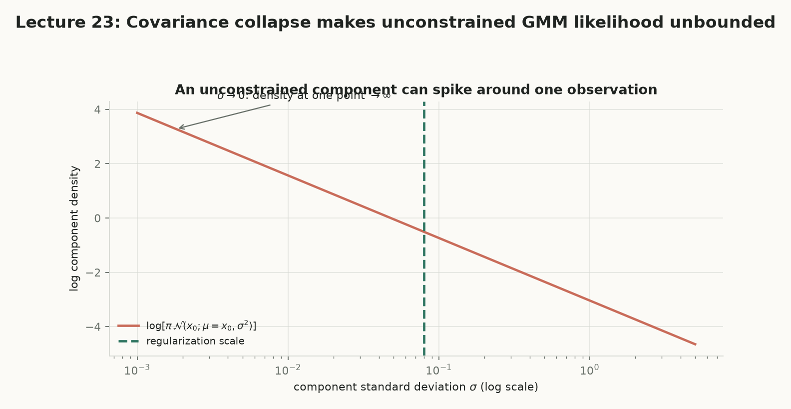
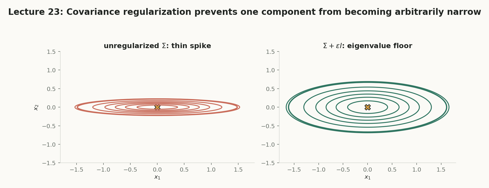
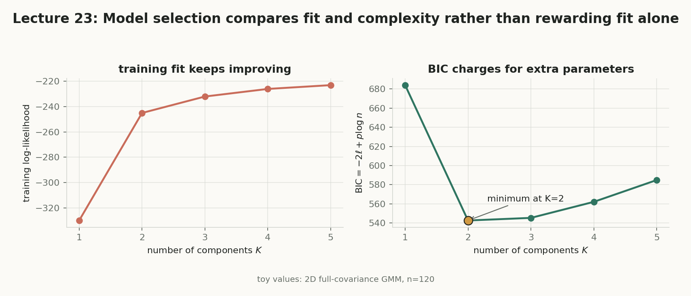
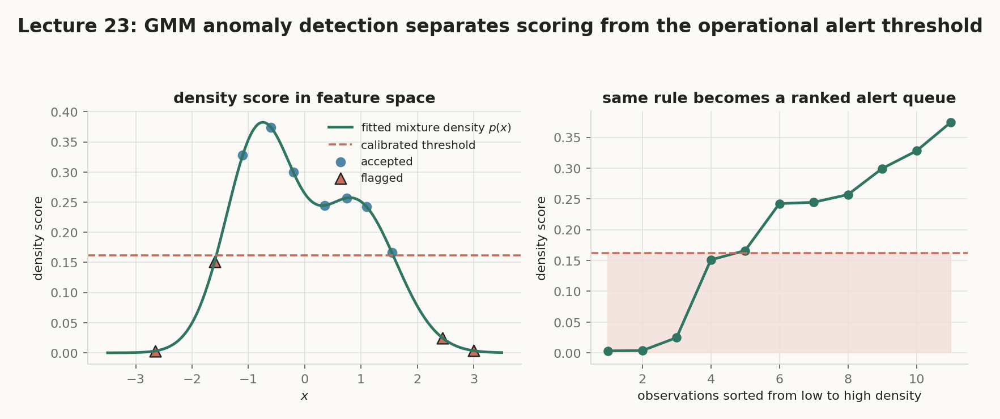
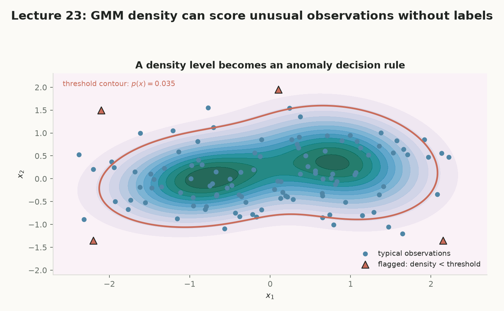
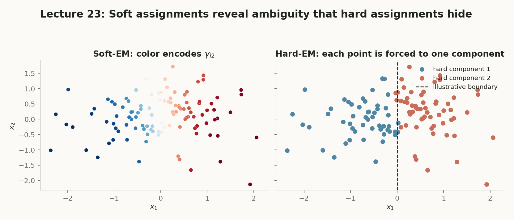

第 23 讲 · 互动附属页
Gaussian Mixture Models II
第 22 讲给了我们责任度 $\gamma$ 与加权 MLE 的 E/M 闭环；本讲回答工程上躲不开的三个问题：组件数 $K$ 选几个？为什么训练 likelihood 可能被协方差塌缩“骗高”？$p(x)$ 和 $\gamma$ 怎样服务分类、异常检测与半监督学习？
从“会算”到“会选、会防、会用”
模型选择（验证似然与信息准则）、协方差塌缩与正则化、GMM 在分类 / 异常检测 / 半监督中的三种用法。
高训练 likelihood ≠ 好模型
无约束 MLE 允许组件塌到单个点上，把目标推向 $+\infty$；不验证、不正则化，就会把过拟合误认为结构。
选 K → 防塌缩 → 用起来
先在验证集上选复杂度，再用 $\Sigma+\nu^2I$ 封住病态解，最后把 $p(x)$ 与 $\gamma$ 接到下游任务。
概念地图：点击节点跳到对应小节
实线是核心路径；紫色节点属于拓展。箭头从方块边界出发，在另一方块边界结束，避免穿过节点。
核心1. 选组件数 K：训练拟合不是泛化
$K$ 太小，一个高斯被迫盖住多个峰（欠拟合）；$K$ 太大，一个峰被拆成多个组件，甚至给少数离群点各发一个很窄的高斯（过拟合）。关键事实：随着 $K$ 增大，旧模型通常能嵌入新模型（把新增组件权重压得接近零），所以训练 likelihood 几乎只会变好——它不为额外自由度收费。
是什么
模型选择：在拟合之前选定 $K$、协方差结构与正则化强度；验证似然 $\ell_{\mathrm{val}}$ 在未参与拟合的数据上评价平均 log-density。
白话理解
训练集是“开卷考”，验证集是“闭卷考”。模型背下课本不代表会做题。
干嘛用
给每个候选 $K$ 一个公平的泛化分数，选出既拟合得好又数值健康的模型。
怎么算
每个 $K$ 单独训练（多次 restart 取训练似然最好的一次），再算 $\ell_{\mathrm{val}}(K)=\frac{1}{|\mathcal V|}\sum_{i\in\mathcal V}\log p_{\hat\theta_K}(x_i)$，除以 $|\mathcal V|$ 让不同验证集大小可比。
为什么重要
验证样本只用来算 $p_{\hat\theta_K}(x)$，绝不能再参与责任度或参数更新，否则它就不再是独立的泛化检查。
两个分数的方向完全不同：
$$\ell_{\mathrm{train}}(K)=\sum_{i\in\mathrm{train}}\log p_{\hat\theta_K}(x_i)\ \text{随 }K\text{ 单调变好},\qquad \ell_{\mathrm{val}}(K)=\frac{1}{|\mathcal V|}\sum_{i\in\mathcal V}\log p_{\hat\theta_K}(x_i)\ \text{有峰}.$$
$\hat\theta_K$ 表示“用候选 $K$ 独立拟合出的一整套参数”，不是在一次运行里临时增减组件。$\ell$ 是希腊字母 ell（log-likelihood），$K$ 是组件数；下文求和下标用 $i$（样本）与 $j$（组件），不要与 $K$ 混淆。
数据真实来自三高斯混合 $p(x)=\frac12\mathcal N(x;0,4)+\frac13\mathcal N(x;3,1)+\frac16\mathcal N(x;-3,9)$（第三个参数是方差 $\sigma^2$）。「重新生成数据」用 Math.random() 做 Box–Muller 采样，连点结果不同。每个 $K=1..6$ 跑 5 次随机初始化、各 60 轮 EM，取训练似然最好的 restart；方差下限 $10^{-6}$ 防止 NaN——这正是下一节正则化的最小动机。下方曲线与表格全部由当前这次采样现算。
读图：训练曲线（蓝）几乎单调上升；验证曲线（绿）在中间某处有峰。验证最优的 $K$ 用圆点标出——它经常落在真实值 $3$ 附近，但不保证每次都命中。
核心2. 协方差塌缩：病态的高 likelihood
一个看似矛盾的现象：训练 log-likelihood 还在上升，模型却已经坏掉。问题来自连续密度可以在极窄区域变得任意高。注意区分：$\sigma$ 是标准差，$\sigma^2$ 是方差；本节推导里塌向零的是方差 $\sigma^2$。
是什么
塌缩 / 退化（degeneracy）：某组件均值恰落在训练点上、方差趋近零，使密度尖峰无限拔高。
白话理解
一个组件“只记住了某一个样本”，把全部质量压成一根无限细的针。
干嘛用
识别它才能解释：为什么某次 restart 的训练 likelihood 异常高，反而要优先怀疑。
怎么算
令 $\mu=x_i$：$\mathcal N(x_i;x_i,\sigma^2)=\frac{1}{\sqrt{2\pi\sigma^2}}$；取对数得 $-\frac12\log(2\pi\sigma^2)\to+\infty$（$\sigma^2\to0$）。
为什么重要
这不是 EM 算错了，而是无约束 MLE 目标本身允许病态解：这个参数序列没有正常的有限最大值。
先单点，再把它接回混合目标。混合密度是各项之和，所以任意一项都能给它下界：
$$\log\mathcal N(x_i;x_i,\sigma^2)=-\frac12\log(2\pi\sigma^2)\to+\infty,$$
$$p(x_i)=\sum_{k=1}^K w_k\,\mathcal N(x_i;\mu_k,\sigma_k^2)\ \ge\ w_j\,\mathcal N(x_i;x_i,\sigma_j^2)=\frac{w_j}{\sqrt{2\pi\sigma_j^2}}.$$
只要 $w_j>0$ 不以更快速度消失，$\sigma_j^2\to0$ 就把 $\log p(x_i)$ 推向无穷；其余训练点仍由别的组件提供有限正密度，于是总 log-likelihood 被这一项单独推走。优化器看到的是“目标越来越好”，我们看到的是一个组件只背下了一个样本。
滑杆控制 $\log_{10}\sigma$，输出框显示 $\sigma$ 本身。左图：$\log\mathcal N(x_i;x_i,\sigma^2)$ 随 $\sigma$ 变化的曲线（公式现算，不是手画）；右图：二维版本——协方差 $\Sigma=\operatorname{diag}(\sigma^2,0.36\sigma^2)$ 的椭圆随 $\sigma$ 压到数据点 $x_i$ 上。
把 $\sigma$ 拖向 $0.02$：左图对数密度持续上升没有顶点，右图椭圆被压成薄片，最小特征值与 $\det\Sigma$ 同步奔向零。

核心3. 正则化与协方差结构
工程上最常用的稳定化是对角加载：$\Sigma_j^{\mathrm{reg}}=\Sigma_j^{\mathrm{MLE}}+\nu^2I$，$\nu>0$。$I$ 是单位矩阵，$\nu^2$ 是加在每条对角线上的小正数。它的效果用特征分解一句话说清。
是什么
协方差正则化 $\Sigma+\nu^2I$；它实现一个 特征值下限：所有特征值至少被抬高 $\nu^2$。
白话理解
给椭圆的最窄方向垫上厚度 $\nu$ 的“地板”，针再尖也尖不过地板。
干嘛用
阻止塌缩方向上的密度爆炸；同时让 $\Sigma^{-1}$ 与 $\log|\Sigma|$ 数值稳定。
怎么算
若 $\Sigma u_r=\lambda_r u_r$，则 $(\Sigma+\nu^2I)u_r=(\lambda_r+\nu^2)u_r$：特征向量不变，每个特征值加 $\nu^2$。
为什么重要
$\nu$ 太小塌缩风险仍在，太大则所有组件被迫很宽而欠拟合——可用验证集选 $\nu$。
除了正则化强度，还要同时选 协方差结构（$d$ 为维度，$j$ 为组件索引）：
$\sigma_j^2$ 指组件 $j$ 的方差（标量），$\Sigma_j$ 指组件 $j$ 的协方差矩阵；注意与求和号 $\sum$ 区分。
$\Sigma_j=\sigma_j^2 I$
好处：参数最少、最稳定。代价：只能表示球形云。
$\Sigma_j=\operatorname{diag}(\sigma_{j1}^2,\ldots,\sigma_{jd}^2)$
好处：允许各维不同尺度。代价：忽略维度间相关性。
$\Sigma_1=\cdots=\Sigma_K$
好处：组件间共享统计强度。代价：不同组件不能有不同形状。
任意对称正定 $\Sigma_j$
好处：能表达旋转椭圆。代价：参数多，易过拟合和奇异。
左图：协方差椭圆（半轴 $2\sqrt{\lambda}$），红色虚线是正则化前，绿色实线是 $\Sigma+\nu^2I$ 之后。右图：四个特征值的条形与归一化因子的对数刻度——把 $\lambda_2$ 拖向 $0.02$、把 $\nu$ 拖到 $0$，看“前”的标记冲出去。

拓展4. 信息准则与参数计数
信息准则把“拟合得好”与“用了多少参数”放进同一个分数。先数清楚参数：$d$ 维、full 协方差的 GMM 中，权重只有 $K-1$ 个自由参数（必须加和为 1），均值有 $Kd$ 个，对称协方差有 $Kd(d+1)/2$ 个。
是什么
BIC 与 AIC 是带复杂度惩罚的模型分数；标签交换 指 $K!$ 个组件排列给出等价模型。
白话理解
每加一个参数都要“交税”：BIC 的税随 $\log n$ 涨，AIC 收固定税。
干嘛用
不想留验证集时，用同一份训练数据比较不同 $K$；也用来给协方差结构的选择记账。
怎么算
$p_K=(K-1)+Kd+\frac{Kd(d+1)}{2}$；$\mathrm{BIC}=-2\ell_{\mathrm{train}}+p_K\log n$，$\mathrm{AIC}=-2\ell_{\mathrm{train}}+2p_K$，取最小。
为什么重要
为什么有负号？$\ell$ 越大越好，而 BIC/AIC 约定“越小越好”，所以写成 $-2\ell$；且只对似然有限、数值健康的模型有意义——塌缩的运行先丢弃。
参数账本与两个准则：
$$p_K=(K-1)+Kd+K\frac{d(d+1)}{2},$$
$$\operatorname{BIC}(K)=-2\ell_{\mathrm{train}}+p_K\log n,\qquad \operatorname{AIC}(K)=-2\ell_{\mathrm{train}}+2p_K.$$
换 diagonal / tied / spherical 协方差时 $p_K$ 要重算。另一个陷阱：交换组件编号得到 $K!$ 个等价参数表示——不要按原始组件编号直接比较不同 restart 的均值或责任度，应比较密度与预测指标，或先做组件对齐。
下图数据来自同一三高斯混合，但用固定种子的 LCG 生成（$n=400$，可复现，不用 Math.random()）；每个 $K$ 用分位数初始化加 LCG 抖动跑 3 次确定性 restart、各 60 轮 EM，取最好者。三条曲线全部现算。

核心5. GMM 作为非线性生成式分类器
给每个类别单独拟合一个 GMM 作为类条件密度，再用 Bayes 公式比较类别，就得到 Gaussian-mixture Bayes classifier。关键区分：组件索引 ≠ 类别索引——一个类别内部可以有多个组件。
是什么
生成式分类器：$p(x\mid Y=c)=\sum_{k\in\mathcal K_c}\pi_{k\mid c}\,\mathcal N(x;\mu_{k\mid c},\Sigma_{k\mid c})$，其中 $\mathcal K_c$ 是类别 $c$ 的组件集合。
白话理解
“正类”不是一种形状，而是两堆点的混合；分类时先在类内把多个模式求和，再比较类间。
干嘛用
表达多峰类别的决策边界可以是非线性、多段的——单个高斯做不到。
怎么算
$P(Y=c\mid x)\propto P(Y=c)\,p(x\mid Y=c)$；类内组件权重 $\pi_{k\mid c}\ge0$、$\sum_{k\in\mathcal K_c}\pi_{k\mid c}=1$，与类间先验 $P(Y=c)$ 是两层不同的权重。
为什么重要
不能把一个 component 的编号直接当成类别标签；这正是第 22 讲“组件不等于语义”的正面用法。
讲义 worked example 2：$P(Y=+)=0.4$、$P(Y=-)=0.6$，正类双峰、负类单峰：
$$p(x\mid +)=\tfrac12\mathcal N(x;0,1)+\tfrac12\mathcal N(x;4,1),\qquad p(x\mid -)=\mathcal N(x;2,1).$$
评分 $s_c(x)=P(Y=c)\,p(x\mid Y=c)$，后验 $P(+\mid x)=s_+/(s_++s_-)$。$s$ 这里是未归一化的类别分数，与异常检测节的 $s(x)=-\log p(x)$ 是两回事，注意上下文。
上图：两条加权密度 $s_+(x)$（蓝）与 $s_-(x)$（橙），阴影区域是预测正类的决策区（非线性、两段）；下图：后验 $P(+\mid x)$。默认 $x=0$ 复现讲义手算；把 $x$ 拖到 $2$ 看后验跌到约 $0.08$。
读图：正类的两个高密度区域让“判正”的区域分成两段；单个正类高斯表达不了这种双峰。
核心6. 用 GMM 做异常检测
训练好 GMM 后，每个点都有密度 $p_{\hat\theta}(x)$。把“模型觉得这个输入有多常见”变成可排序的分数，就得到异常检测器。注意：比较的是密度不是概率——连续变量满足 $P(X=x)=0$，且密度随单位与坐标变换改变，所以阈值必须在同一特征表示、同一标准化下校准；低密度也不自动等于业务异常。
是什么
异常分数 $s(x)=-\log p_{\hat\theta}(x)$；误报率 $P_{\mathrm{FA}}(\tau)=P_{\mathrm{normal}}(-\log p_{\hat\theta}(X)\ge\tau)$。
白话理解
密度越低分数越高；阈值 $\tau$ 是报警线，越过才告警。
干嘛用
把连续的密度分数变成可操作的告警队列；用验证集分位数控制误报。
怎么算
$x$ 被标记为异常 $\iff s(x)\ge\tau \iff p(x)\le e^{-\tau}$；想减少误报就增大 $\tau$（等价地降低密度阈值 $\delta=e^{-\tau}$）。
为什么重要
这套解释依赖“训练数据近似代表正常分布”；否则低密度只说明“在当前模型下少见”。
密度模型沿用 $p(x)=\frac12\mathcal N(x;0,4)+\frac13\mathcal N(x;3,1)+\frac16\mathcal N(x;-3,9)$。红色区域是 $p(x)\le e^{-\tau}$ 的报警区；误报率 $P_{\mathrm{FA}}(\tau)=\int_{s(x)\ge\tau}p(x)\,dx$ 用细网格数值积分现算；校准按钮用二分法解 $P_{\mathrm{FA}}=5\%$ 并把滑杆设过去。


核心7. 半监督 GMM：只固定有标签点的责任度
少量样本知道语义类别，大量样本只有特征。做法出奇地温和：无标签点照常算软责任度，有标签点（在一类别一组件时）把责任度固定成 0/1，然后所有点进入同一组加权 MLE 更新。
是什么
半监督学习：同时使用 $(x_i,y_i)$ 与裸 $x_i$；其有效性依赖 聚类假设——同一高密度区域更可能共享标签。
白话理解
有标签点是硬锚点，把组件“钉”在语义上；无标签点仍以软权重提供密度结构。
干嘛用
标注昂贵时，用少量标签引导大量无标签数据的组件归属。
怎么算
无标签：$\gamma_{ij}=P(Z_i=j\mid x_i,\theta^{\mathrm{old}})$；有标签（一类别一组件）：$\gamma_{ij}=\mathbf 1\{j=y_i\}$。
为什么重要
若语义边界穿过高密度区域（聚类假设不成立），无标签数据可能误导而非帮忙。
一类别多组件时，$\mathbf 1\{j=y_i\}$ 不再适用。设类别 $c$ 允许的组件集合为 $\mathcal K_c$：已知 $y_i=c$ 只能断定 $Z_i\in\mathcal K_c$，于是集合外置零、集合内按当前联合分数重新归一化：
$$\gamma_{ij}=\begin{cases}\dfrac{w_j\,\mathcal N(x_i;\mu_j,\Sigma_j)}{\sum_{\ell\in\mathcal K_c}w_\ell\,\mathcal N(x_i;\mu_\ell,\Sigma_\ell)},&j\in\mathcal K_c,\\[10pt]0,&j\notin\mathcal K_c.\end{cases}$$
这就是“标签提供锚点”的准确含义：排除不可能的组件，但不一定消除类别内部的模式不确定性。随后统一 $N_j=\sum_i\gamma_{ij}$、$w_j=N_j/n$、$\mu_j=\sum_i\gamma_{ij}x_i/N_j$。
讲义 §10.1 的四个点 $x=0,1,4,5$。默认两组件模型调成使无标签点的 $\gamma$ 复现讲义的 $0.8/0.2$ 与 $0.1/0.9$；每个点可在 无标签 / 标为 1 / 标为 2 之间切换，右侧统计量即时重算。
拓展8. Worked example：三高斯混合的矩与责任度
这是贯穿全讲的基准模型：$p(x)=\frac12\mathcal N(x;0,4)+\frac13\mathcal N(x;3,1)+\frac16\mathcal N(x;-3,9)$。责任度 在第 22 讲已建立，这里作为复核：$\gamma_{ij}=P(Z_i=j\mid x_i,\theta)$，每行加和为 1。权重检查：$\frac12+\frac13+\frac16=1$。再次提醒：括号里第三个参数是方差 $\sigma^2$，所以三个标准差是 $2,1,3$。
混合矩用“全期望”逐组件加权（$\mathbb E[X^2]$ 用 $\mathbb E[X^2\mid Z=j]=\sigma_j^2+\mu_j^2$）：
$$\mathbb E[X]=\sum_j w_j\mu_j,\qquad \mathbb E[X^2]=\sum_j w_j(\sigma_j^2+\mu_j^2),\qquad \operatorname{Var}(X)=\mathbb E[X^2]-(\mathbb E[X])^2.$$
上面三张统计卡的数字由这两条公式在页面加载时现算，不是写死的文本。
三条曲线是 $\gamma_j(x)$ 随 $x$ 的变化（公式现算）。默认 $x=4$ 复现讲义 §3.2；把滑杆拖到 $x=1.8$ 复现 §3.3——该点在前两个组件之间，Hard-EM 必须在两个几乎相等的选项里强行选一个。

拓展9. 实践工作流与常见误区
把本讲落成操作顺序；每一条都能在前面的小节里找到原因。
实践工作流（讲义 §13，七步）
1) 先按训练集统计量标准化特征，避免单位差异主导协方差。2) 预先设定候选 $K$、协方差结构和正则化强度。3) 每个设置运行多次 restart，并用相同停止标准。4) 记录训练/验证 log-likelihood、每个 $N_j$、最小协方差特征值和数值警告。5) 用验证 likelihood、BIC/AIC 或任务指标选模型。6) 聚类时检查稳定性与可解释性；异常检测时单独选阈值。7) 若组件很小、协方差极端或某次 restart 的 likelihood 异常高，优先怀疑塌缩。
常见误区（讲义 §15，六条）
1) 只用训练 likelihood 选 $K$：更大的模型可能只是更会过拟合。2) 以为 Soft-EM 自动消除过拟合：塌缩在 Soft-EM 中同样存在。3) 把 $\Sigma+\nu^2I$ 自动当作 Wishart-MAP：它是工程稳定化，声称 MAP 必须给出匹配的先验目标与推导。4) 把低密度直接解释成异常：先确认训练分布代表正常样本。5) 把一个类别限制为一个 component：GMM Bayes classifier 允许每个类别有多个模式。6) 认为半监督总会提高性能：聚类假设不成立时，无标签数据可能伤害结果。
分类与异常检测可分开建模
生成式分类写 $p(x,y)=p(y)\,p(x\mid y)$；也可以学 $p(x,y)=p(x)\,p(y\mid x)$——$p(y\mid x)$ 负责分类准确，$p(x)$ 负责检测分布外输入。别把“分类置信度高”当作“输入一定正常”：陌生输入上判别式模型也可能过度自信。
高 likelihood ≠ 有意义的聚类
GMM 优化的是 $\sum_i\log p_{\hat\theta}(x_i)$，不是“与人类语义标签的一致程度”。一个语义类别可能由多个组件表达，一个组件也可能跨语义类别；接受模型前至少联合检查验证 likelihood、协方差特征值、restart 稳定性、责任度合理性与下游指标。
核心收束：让高 likelihood 通过安检
验证似然（有峰，可信）
$$\ell_{\mathrm{val}}(K)=\frac{1}{|\mathcal V|}\sum_{i\in\mathcal V}\log p_{\hat\theta_K}(x_i)$$
BIC（越小越好）
$$\operatorname{BIC}(K)=-2\ell_{\mathrm{train}}+p_K\log n$$
特征值地板
$$(\Sigma+\nu^2I)u_r=(\lambda_r+\nu^2)u_r$$
生成式分类
$$P(Y=c\mid x)\propto P(Y=c)\,p(x\mid Y=c)$$
异常分数
$$s(x)=-\log p_{\hat\theta}(x),\quad \text{报警}\iff s(x)\ge\tau$$
半监督责任度
$$\gamma_{ij}=\mathbf 1\{j=y_i\}\ \text{（有标签）};\quad P(Z_i=j\mid x_i,\theta)\ \text{（无标签）}$$